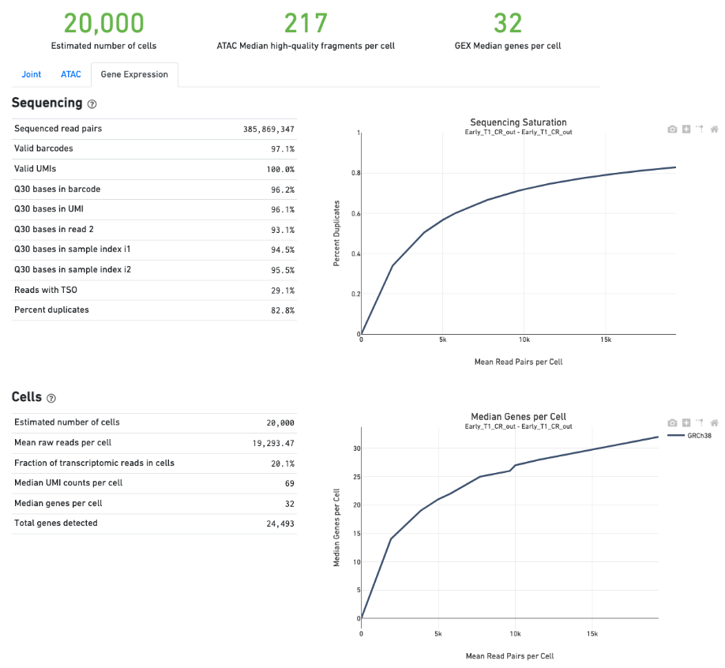

README For scRNA pipeline analyses.
Table of Contents
- 1. Jamboree
- 2. Ali
- 3. Updates to jamboree environment.
- 4. Data
- 5. Cellranger
- 6. Star Solo
- 7. Kallisto
- 8. Salmon/Alevin
- 9. How do tools handle multi-mapping reads?
- 10. Redo everything with 10x's smaller annotation set.
- 11. After jamboree notes
- 11.1.
- 11.2. Trying to build a better salmon index
- 11.3. Current problems
- 11.4. Once again RSEM fails with the same error that read maps and doesn't map.
- 11.5. Trying to build minimal index.
- 11.6. Summary of things that went wrong
- 11.7. Finished the C1 branch
- 11.8. Work on analyzing 10x
- 11.9. lets rerun kallisto with a different fragment & sd number
- 11.10. Also how well does kallisto match the spike in concentrations?
- 11.11. Presented spike in results to group
- 11.12. Spike ins were worse than expected
- 11.13. Presented…
- 11.14. Process C1 data with pseduo mappers
- 11.15. Need to run the minimal set.
- 11.16. Continuing to run the minimal set
- 11.17. minimal 10x results look good
- 11.18. Henry's instructions on making a assembly hub.
- 11.19. Collect files to diagnose kallisto ERCC issues
- 11.20. Trying to get help from Kallisto
- 11.21. DONE Try Becha's long read version of kallisto
- 11.22. TODO is –em on in my earlier 10x run?
- 11.23. more analysis, not enough notes.
- 11.24. Test running TCC quantification program
- 11.25. Working with Pacter lab on salmon/alevin-fry comparison
- 11.26. Copied over the pass filter intersection.
- 11.27. Generate list of 10x samples for Alex
- 12. compare-10x-e10.5-common-genes
- 13. Work toward a 10x pipeline
- 13.1. cellranger-arc run
- 13.2. star solo run
- 13.3. star solo 2.7.8a run
- 13.4. cellranger's star using star defaults where possible.
- 13.5. star 2.7.8a using STARsolo documented arguments.
- 13.6. Story so far.
- 13.7. Star solo 2.7.9a_2021-06-25 with ENCODE setting and CR compatibility
- 13.8. Alex says it's forward stranded
- 13.9. Tests with the 10x annotation look good, how about the ENCODE annotation?
- 13.10. Forgot to also test some of the multi-read solvers
- 13.11. lung
- 13.12. Ali wanted to see how well clustering separates tissues, lets do more tissues for the 16f_nuc
- 13.13. Oops he actually wanted same tissue across multiple donors.
- 13.14. Anshul asked for looking at a better analyzed dataset as well
- 14. working on getting snakemake working at Caltech HPC.
- 15. Forgot to update for quite some time.
- 16. Checking for duplicates
- 17. Building indexes
- 18. Trying to get split-seq working
- 19. question which is the barcode and which is sequence
- 20. first production run
- 21. Submitting configuration file
- 22. Annika had another batch to process.
1 Jamboree
This is a VM for the June 2020 ENCODE jamboree. I should remember to grab my notes out before they shut the VM down.
I am working on trying to figure out a single cell RNA-seq pipepline
Notes I'm sharing with other people are in this google doc https://docs.google.com/document/d/1ZFPmoHS7Ce_8mgPfNMo620wkq47HRhU2wp57_HwH4TU/edit#
2 Ali
pick a pipeline that also works with split-bio & dd-seq Liz has split-bio c2c12 data
3 Updates to jamboree environment.
I installed msmtp and configured an account on chaos so I can send myself email when jobs finish running.
I set up file:///woldlab/loxcyc/home/diane/.msmtprc with a temporary account and created a small script to send myself an email
#!/bin/bash printf "From: diane@ghic.org\nTo: diane@caltech.edu\nSubject: $1\n\n$2\n" | msmtp -t
4 Data
In the google doc it looks like our best dataset shared among all technologies is the e10.5 timepoint
5 Cellranger
One comparison that needs to be done is to run cellranger with a newer annotation set.
5.1 Download cell ranger
I filled out their license agreement and downloaded the current version of cellranger. The ticket will probably be expired anytime anyone else looks at this.
curl -o cellranger-3.1.0.tar.gz "http://cf.10xgenomics.com/releases/cell-exp/cellranger-3.1.0.tar.gz?Expires=1591692955&Policy=eyJTdGF0ZW1lbnQiOlt7IlJlc291cmNlIjoiaHR0cDovL2NmLjEweGdlbm9taWNzLmNvbS9yZWxlYXNlcy9jZWxsLWV4cC9jZWxscmFuZ2VyLTMuMS4wLnRhci5neiIsIkNvbmRpdGlvbiI6eyJEYXRlTGVzc1RoYW4iOnsiQVdTOkVwb2NoVGltZSI6MTU5MTY5Mjk1NX19fV19&Signature=kVpABUeGN2MZPTfGXzFoWyVjIKeRUXbBBYKGMsa5eNeT3iSF50Dy5cB7fmbXfI2E8yjObDAI1KTXa3KYsD3WkcxI~SfmN8A6vCYfkTl4XutcdIhdCWdXU2ywbjoijbaMyhOjYXtU5ZzUD7v4-Kz1WMtczUs8hAfFu~QYmlNyey~9JNTQxBQ8EhY02pQziQrvHzJzbEw88282Sklltg8eQDCx~dxTXxFIVBYyMNqzMhOdI4MQa66lmnQ6d-YUT5M4aj5JxtCVjkJVbeCjCXkHHQh0fjhMgy6t-BNdzIhq6yfXici0bdjw26GZxy6w0YwWFGVuaB-VyDyPkTnrHxI9Cg__&Key-Pair-Id=APKAI7S6A5RYOXBWRPDA"
5.2 Build new cell ranger index
mkdir ~/proj/mm10-M21-male cd ~/proj/mm10-M21-male curl -L -O http://woldlab.caltech.edu/~diane/genome/mm10-M21-male/mm10-M21-ercc+phix.fa curl -L -O http://woldlab.caltech.edu/~diane/genome/mm10-M21-male/gencode.vM21-tRNAs-ERCC.gff ./build-cellranger.sh ; ~/bin/notify.sh "finished" "finished"
5.3 Download data
TARGET=ENCSR874BOF_e10_5_limb if [ ! -e ${TARGET} ] ; then mkdir ${TARGET} ; fi pushd ${TARGET} curl -L -o ENCFF294PZE_R1.fastq.gz https://www.encodeproject.org/files/ENCFF294PZE/@@download/ENCFF294PZE.fastq.gz curl -L -o ENCFF111ISS_R2.fastq.gz https://www.encodeproject.org/files/ENCFF111ISS/@@download/ENCFF111ISS.fastq.gz mv ENCFF294PZE_R1.fastq.gz ENCSR874BOF_S1_L001_R1_001.fastq.gz mv ENCFF111ISS_R2.fastq.gz ENCSR874BOF_S1_L001_R2_001.fastq.gz popd
5.4 Run cell ranger
proj/ENCSR874BOF-10x-10.5-limb/run-cellranger.sh
cd ~/proj/ENCSR874BOF_e10_5_limb ./run-cellranger.sh ; ~/bin/notify.sh "cellranger count finished" "CR finished"
real 922m34.656s user 5206m31.687s sys 385m19.170s
Results stored in https://www.synapse.org/#!Synapse:syn22150185
Minimimum genes detected fraction mitochondria
7 Kallisto
7.1 Download
ENCODE is using 0.44.0 but the newer versions did some work on bus tools so try that one https://github.com/pachterlab/kallisto/releases/download/v0.44.0/kallisto_linux-v0.44.0.tar.gz Latest version is: 0.46.2 https://github.com/pachterlab/kallisto/releases/download/v0.46.2/kallisto_linux-v0.46.2.tar.gz
7.2 Build 0.46.2 index
We need the transcriptome file. RSEM has a copy laying around in it.
ENCFF363TFV is the bulk ENCODE rsem index.
push genome
curl -L -O https://www.encodeproject.org/files/ENCFF363TFV/@@download/ENCFF363TFV.tar.gz
pushd mm10-M21-male
tar xavf ../ENCFF363TFV.tar.gz --strip=1
time ~/kallisto_linux-v0.46.2/kallisto index -i mm10-M21-male-kallisto-0.46.2.idx rsem.transcripts.fa ; ~/bin/notify.sh "kallisto finished" "inde xing done"
7.3 Rebuild index on galvar
GENOME_DIR=~/proj/genome ENCODE_GENOME=~/proj/encode-202006-jamboree-detrout-rna-sc-pipeline/genome/mm10-M21-male time ~/proj/kallisto/build/src/kallisto index \ -i ${ENCODE_GENOME}/mm10-M21-male-kallisto-0.46.2.idx \ ${GENOME_DIR}/mm10-M21-male/rsem.transcripts.fa
7.4 Count
First build the bus file
time ~/kallisto_linux-v0.46.2/kallisto bus \ -t 32 \ -i ~/proj/genome/mm10-M21-male/mm10-M21-male-kallisto-0.46.2.idx \ -o mm10-M21-male-kallisto-0.46.2 \ -x 10xv2 \ ENCSR874BOF_S1_L001_R1_001.fastq.gz ENCSR874BOF_S1_L001_R2_001.fastq.gz
Downloaded Bustools
https://github.com/BUStools/bustools/releases/download/v0.39.3/bustools_linux-v0.39.3.tar.gz
Following hints from https://www.kallistobus.tools/getting_started_explained.html
Download 10xv2 whitelist curl -L -O https://github.com/bustools/getting_started/releases/download/getting_started/10xv2_whitelist.txt
curl -L -O https://github.com/BUStools/getting_started/releases/download/getting_started/t2g.py cat ~/proj/genome/mm10-M21-male/gencode.vM21-tRNAs-ERCC.gff | python3 ~/bustools_linux-v0.39.3t2g.py > ~/proj/genome/mm10-M21-male/mm10-M21-male-t2g.txt
time ~/bustools_linux-v0.39.3/bustools correct -w ~/proj/genome/10xv2_whitelist.txt -o output.correct.bus output.bus Found 737280 barcodes in the whitelist Number of hamming dist 1 barcodes = 20550336 Processed 359437471 bus records In whitelist = 342274396 Corrected = 5260521 Uncorrected = 11902554
real 2m59.417s user 1m10.048s sys 0m17.139s
time ~/bustools_linux-v0.39.3/bustools sort -t 32 -o output.correct.sort.bus output.correct.bus Read in 347534917 BUS records
real 5m11.484s user 1m33.653s sys 0m29.536s
(base) diane@ip-172-31-30-226:~/proj/ENCSR874BOF_e10_5_limb/mm10-M21-male-kallisto-0.46.2$ time ~/bustools_linux-v0.39.3/bustools count -o eqcount/tcc -g ~/proj/genome/mm10-M21-male/mm10-M21-male-t2g.txt -e matrix.ec -t transcripts.txt output.correct.sort.bus
real 0m32.146s user 0m20.013s sys 0m3.980s (base) diane@ip-172-31-30-226:~/proj/ENCSR874BOF_e10_5_limb/mm10-M21-male-kallisto-0.46.2$ time ~/bustools_linux-v0.39.3/bustools count -o genecount/gene -g ~/proj/genome/mm10-M21-male/mm10-M21-male-t2g.txt -e matrix.ec -t transcripts.txt –genecounts output.correct.sort.bus
real 0m10.240s user 0m8.063s sys 0m1.697s
7.5 Count try 2
The above run didn't generate many results, I wonder if the order of the fastq confused it.
time ~/kallisto_linux-v0.46.2/kallisto bus \ -t 32 \ -i ~/proj/genome/mm10-M21-male/mm10-M21-male-kallisto-0.46.2.idx \ -o mm10-M21-male-kallisto-0.46.2-reverse \ -x 10xv2 \ ENCSR874BOF_S1_L001_R2_001.fastq.gz ENCSR874BOF_S1_L001_R1_001.fastq.gz
time ~/bustools_linux-v0.39.3/bustools correct -w ~/proj/genome/10xv2_whitelist.txt -o output.correct.bus output.bus Found 737280 barcodes in the whitelist Number of hamming dist 1 barcodes = 20550336 Processed 31470855 bus records In whitelist = 5755 Corrected = 141370 Uncorrected = 31323730
real 0m21.745s user 0m18.491s sys 0m1.825s
time ~/bustools_linux-v0.39.3/bustools sort -t 32 -o output.correct.sort.bus output.correct.bus Read in 147125 BUS records
real 0m2.247s user 0m0.540s sys 0m1.514s
time ~/bustools_linux-v0.39.3/bustools count -o eqcount/tcc -g ~/proj/genome/mm10-M21-male/mm10-M21-male-t2g.txt -e matrix.ec -t transcripts.txt output.correct.sort.bus
real 0m2.294s user 0m1.901s sys 0m0.152s
time ~/bustools_linux-v0.39.3/bustools count -o genecount/gene -g ~/proj/genome/mm10-M21-male/mm10-M21-male-t2g.txt -e matrix.ec -t transcripts.txt –genecounts output.correct.sort.bus
real 0m1.519s user 0m1.289s sys 0m0.132s
7.6 Try 3
does it work with kallisto provided index?
#!/bin/bash time ~/kallisto_linux-v0.46.2/kallisto bus \ -t 32 \ -i ~/proj/genome/mus_musculus/transcriptome.idx \ -o mm10-M21-male-kallisto-0.46.2-upstream-idx \ -x 10xv2 \ ENCSR874BOF_S1_L001_R1_001.fastq.gz ENCSR874BOF_S1_L001_R2_001.fastq.gz cd mm10-M21-male-kallisto-0.46.2-upstream-idx time ~/bustools_linux-v0.39.3/bustools correct -w ~/proj/genome/10xv2_whitelist.txt -o output.correct.bus output.bus time ~/bustools_linux-v0.39.3/bustools sort -t 32 -o output.correct.sort.bus output.correct.bus mkdir eqcount genecount time ~/bustools_linux-v0.39.3/bustools count -o eqcount/tcc -g ~/proj/genome/mm10-M21-male/mm10-M21-male-t2g.txt -e matrix.ec -t transcripts.txt output.correct.sort.bus time ~/bustools_linux-v0.39.3/bustools count -o genecount/gene -g ~/proj/genome/mm10-M21-male/mm10-M21-male-t2g.txt -e matrix.ec -t transcripts.txt --genecounts output.correct.sort.bus
7.7 Quantify locally using kallisto
This run was without enabling EM
GENOME_DIR=~/proj/genome ENCODE_GENOME=~/proj/encode-202006-jamboree-detrout-rna-sc-pipeline/genome/mm10-M21-male TARGET_DIR=ENCSR874BOF_e10_5_limb/kallisto BUS_DIR=~/proj/bustools/build/src time ~/proj/kallisto/build/src/kallisto bus \ -t 20 \ -i ${ENCODE_GENOME}/mm10-M21-male-kallisto-0.46.2.idx \ -o ${TARGET_DIR} \ -x 10xv2 \ ENCSR874BOF_e10_5_limb/ENCSR874BOF_S1_L001_R1_001.fastq.gz \ ENCSR874BOF_e10_5_limb/ENCSR874BOF_S1_L001_R2_001.fastq.gz time ${BUS_DIR}/bustools correct \ -w 10xv2_whitelist.txt \ -o ${TARGET_DIR}/output.correct.bus \ ${TARGET_DIR}/output.bus mkdir ${TARGET_DIR}/{eqcount,genecount} time ${BUS_DIR}/bustools sort \ -t 20 \ -o ${TARGET_DIR}/output.correct.sort.bus \ ${TARGET_DIR}/output.correct.bus time ${BUS_DIR}/bustools count \ -o ${TARGET_DIR}/eqcount/tcc \ -g ${ENCODE_GENOME}/txp2gene.tsv \ -e ${TARGET_DIR}/matrix.ec \ -t ${TARGET_DIR}/transcripts.txt \ ${TARGET_DIR}/output.correct.sort.bus time ${BUS_DIR}/bustools count \ -o ${TARGET_DIR}/genecount/gene \ -g ${ENCODE_GENOME}/txp2gene.tsv \ -e ${TARGET_DIR}/matrix.ec \ -t ${TARGET_DIR}/transcripts.txt \ --genecounts ${TARGET_DIR}/output.correct.sort.bus time ${BUS_DIR}/bustools whitelist \ -o ${TARGET_DIR}/filtered-barcodes.txt \ ${TARGET_DIR}/output.correct.sort.bus
Enable single cell EM
GENOME_DIR=~/proj/genome ENCODE_GENOME=~/proj/encode-202006-jamboree-detrout-rna-sc-pipeline/genome/mm10-M21-male TARGET_DIR=ENCSR874BOF_e10_5_limb/kallisto_em BUS_DIR=~/proj/bustools/build/src time ~/proj/kallisto/build/src/kallisto bus \ -t 20 \ -i ${ENCODE_GENOME}/mm10-M21-male-kallisto-0.46.2.idx \ -o ${TARGET_DIR} \ -x 10xv2 \ ENCSR874BOF_e10_5_limb/ENCSR874BOF_S1_L001_R1_001.fastq.gz \ ENCSR874BOF_e10_5_limb/ENCSR874BOF_S1_L001_R2_001.fastq.gz time ${BUS_DIR}/bustools correct \ -w 10xv2_whitelist.txt \ -o ${TARGET_DIR}/output.correct.bus \ ${TARGET_DIR}/output.bus mkdir ${TARGET_DIR}/{eqcount,genecount} time ${BUS_DIR}/bustools sort \ -t 20 \ -o ${TARGET_DIR}/output.correct.sort.bus \ ${TARGET_DIR}/output.correct.bus time ${BUS_DIR}/bustools count --em \ -o ${TARGET_DIR}/eqcount/tcc \ -g ${ENCODE_GENOME}/txp2gene.tsv \ -e ${TARGET_DIR}/matrix.ec \ -t ${TARGET_DIR}/transcripts.txt \ ${TARGET_DIR}/output.correct.sort.bus time ${BUS_DIR}/bustools count --em \ -o ${TARGET_DIR}/genecount/gene \ -g ${ENCODE_GENOME}/txp2gene.tsv \ -e ${TARGET_DIR}/matrix.ec \ -t ${TARGET_DIR}/transcripts.txt \ --genecounts ${TARGET_DIR}/output.correct.sort.bus time ${BUS_DIR}/bustools whitelist \ -o ${TARGET_DIR}/filtered-barcodes.txt \ ${TARGET_DIR}/output.correct.sort.bus time ${BUS_DIR}/bustools whitelist \ -o ${TARGET_DIR}/filtered-barcodes.txt \ ${TARGET_DIR}/output.correct.sort.bus
Kallisto bus runtime real 35m44.081s user 123m13.511s sys 0m42.385s
bustools correct runtime
real 1m57.074s user 0m56.817s sys 0m10.216s
bustools count –em (transcript)
real 1m10.530s user 0m57.881s sys 0m2.444s
bustools count –em (gene)
real 3m28.821s user 3m23.627s sys 0m1.993s
8 Salmon/Alevin
Ben had originally tried to get Salmon/Alevin to run but it was segfaulting on the AWG hosts.
Instead of salmon's prebuilt version, I'm going to use the version built by Debian, the version in buster is 0.12.0+ds1-1, but I want the version in unstable 1.2.1+ds1-1+b2.
Sounds like it's time for singularity.
pushd salmon-container sudo singularity build /tmp/salmon-unstable.simg salmon-unstable.def cp /tmp/salmon-unstable.simg . popd
singularity run salmon-container/salmon-unstable.simg --version
8.1 Building salmon reference from GENCOE
I'd suggested using the transcriptome file generated by RSEM, but maybe that wasn't working correctly. I spent some time reading Salmon's documentation and am going to try building an index based on their recommendations. Downloading Reference
pushd genome/mm10-M21-for-salmon singularity run ../../salmon-container/salmon-unstable.simg --version wget ftp://ftp.ebi.ac.uk/pub/databases/gencode/Gencode_mouse/release_M21/gencode.vM21.transcripts.fa.gz wget ftp://ftp.ebi.ac.uk/pub/databases/gencode/Gencode_mouse/release_M21/GRCm38.primary_assembly.genome.fa.gz grep "^>" <(gunzip -c GRCm38.primary_assembly.genome.fa.gz) | cut -d " " -f 1 > decoys.txt sed -i.bak -e 's/>//g' decoys.txt cat gencode.vM21.transcripts.fa.gz GRCm38.primary_assembly.genome.fa.gz > gentrome.fa.gz singularity run ../../salmon-container/salmon-unstable.simg index -t gentrome.fa.gz -d decoys.txt -p 12 -i salmon_index --gencode popd
That eventually finished.
8.2 Building salmon reference from ENCODE files.
(This is the version using the decoy… but I don't want the spikes to be the decoy)
But I need the spikes to have the tSpikein_ prefix or else they don't show up in the matrix.
GENOME_DIR=~/proj/genome/ pushd genome/mm10-M21-male head -n 336220 ${GENOME_DIR}/mm10-M21-male/rsem.transcripts.fa | gzip -9 > mm10-M21-male-gentrome.gz zcat ${GENOME_DIR}/ENCFF001RTP.fasta.gz | sed 's/ERCC-/tSpikein_ERCC-/' | gzip -9 >> mm10-M21-male-gentrome.gz zcat ${GENOME_DIR}/ENCFF335FFV.fasta.gz | sed 's/phiX174/tSpikein_phiX174/' | gzip -9 >> mm10-M21-male-gentrome.gz cat ${GENOME_DIR}/mm10_no_alt_analysis_set_ENCODE.fasta.gz >> mm10-M21-male-gentrome.gz zgrep "^>" ${GENOME_DIR}/mm10_no_alt_analysis_set_ENCODE.fasta.gz | cut -d " " -f 1 > decoys.txt sed -i.bak -e 's/>//g' decoys.txt singularity run ../../salmon-container/salmon-unstable.simg index \ -t mm10-M21-male-gentrome.gz \ -d decoys.txt \ -p 16 \ -i salmon_index_decoy rm decoys.txt.bak popd
GENOME_DIR=~/proj/genome/mm10-M21-male pushd genome/mm10-M21-male singularity run ../../salmon-container/salmon-unstable.simg index \ -t ${GENOME_DIR}/rsem.idx.fa \ -p 16 \ -i salmon_index popd
8.3 Make transcript to gene map
pushd genome/mm10-M21-for-salmon zgrep '>' gencode.vM21.transcripts.fa.gz | cut -c 2- | cut -d '|' -f 1,2 | tr '|' '\t' > txp2gene.tsv popd
8.4 Alevin 10x style alignment
It looks like they repurposed paired end sequencing to deal with chromium reads.
https://salmon.readthedocs.io/en/latest/alevin.html#using-alevin
-1 argument is the paired reads that contains the CB+UMI fastq while -2 is the sequence.
ANALYSIS_DIR=ENCSR874BOF_e10_5_limb GENOME_DIR=genome/mm10-M21-for-salmon SALMON=salmon-container/salmon-unstable.simg time singularity run ${SALMON} alevin \ -l ISR \ -1 ${ANALYSIS_DIR}/ENCSR874BOF_S1_L001_R2_001.fastq.gz \ -2 ${ANALYSIS_DIR}/ENCSR874BOF_S1_L001_R1_001.fastq.gz \ --chromium \ -i ${GENOME_DIR}/salmon_index \ -p 16 \ -o ${ANALYSIS_DIR}/alevin_output \ --tgMap ${GENOME_DIR}/txp2gene.tsv
[alevinLog] [info] Total 21964.00 UMI after deduplicating. [alevinLog] [info] Total 12764 BiDirected Edges. [alevinLog] [info] Total 4536 UniDirected Edges. On Galvar real 60m47.402s user 540m9.813s sys 3m32.461s
ANALYSIS_DIR=ENCSR874BOF_e10_5_limb du -shc ${ANALYSIS_DIR}/alevin_output
That doesn't seem like a real result, lets try swapping the fastqs.
ANALYSIS_DIR=ENCSR874BOF_e10_5_limb GENOME_DIR=genome/mm10-M21-for-salmon SALMON=salmon-container/salmon-unstable.simg time singularity run ${SALMON} alevin \ -l ISR \ -1 ${ANALYSIS_DIR}/ENCSR874BOF_S1_L001_R1_001.fastq.gz \ -2 ${ANALYSIS_DIR}/ENCSR874BOF_S1_L001_R2_001.fastq.gz \ --chromium \ -i ${GENOME_DIR}/salmon_index \ -p 16 \ -o ${ANALYSIS_DIR}/alevin_output_R1_R2 \ --tgMap ${GENOME_DIR}/txp2gene.tsv
[alevinLog] [info] Total 141537317.00 UMI after deduplicating. [alevinLog] [info] Total 29915993 BiDirected Edges. [alevinLog] [info] Total 1535489 UniDirected Edges.
real 91m53.868s user 999m44.076s sys 4m0.639s
ANALYSIS_DIR=ENCSR874BOF_e10_5_limb du -shc ${ANALYSIS_DIR}/alevin_output_R1_R2
That looks much more promising.
Hm… but non-standard output file format.
so again.
ANALYSIS_DIR=ENCSR874BOF_e10_5_limb GENOME_DIR=genome/mm10-M21-for-salmon SALMON=salmon-container/salmon-unstable.simg time singularity run ${SALMON} alevin \ -l ISR \ -1 ${ANALYSIS_DIR}/ENCSR874BOF_S1_L001_R1_001.fastq.gz \ -2 ${ANALYSIS_DIR}/ENCSR874BOF_S1_L001_R2_001.fastq.gz \ --chromium \ -i ${GENOME_DIR}/salmon_index \ -p 16 \ -o ${ANALYSIS_DIR}/alevin_output_R1_R2 \ --dumpMtx \ --tgMap ${GENOME_DIR}/txp2gene.tsv
8.4.1 third try, with encode annotation files
ANALYSIS_DIR=ENCSR874BOF_e10_5_limb GENOME_DIR=genome/mm10-M21-male SALMON=salmon-container/salmon-unstable.simg time singularity run ${SALMON} alevin \ -l ISR \ -1 ${ANALYSIS_DIR}/ENCSR874BOF_S1_L001_R1_001.fastq.gz \ -2 ${ANALYSIS_DIR}/ENCSR874BOF_S1_L001_R2_001.fastq.gz \ --chromium \ -i ${GENOME_DIR}/salmon_index \ -p 16 \ -o ${ANALYSIS_DIR}/alevin_output_encode_R1_R2 \ --dumpMtx \ --tgMap ${GENOME_DIR}/txp2gene.tsv
8.5 TODO we need to compare the spearmans & relative differences to the star values.
9 How do tools handle multi-mapping reads?
Anshul thinks this is import
Important paperCompression of quantification uncertainty for scRNA-seq counts https://www.biorxiv.org/content/10.1101/2020.07.06.189639v1
Quantification estimates of gene expression from single-cell RNA-seq (scRNA-seq) data have inherent uncertainty due to reads that map to multiple genes. Many existing scRNA-seq quantification pipelines ignore multi-mapping reads and therefore underestimate expected read counts for many genes. alevin accounts for multi-mapping reads and allows for the generation of "inferential replicates", which reflect quantification uncertainty. Previous methods have shown improved performance when incorporating these replicates into statistical analyses, but storage and use of these replicates increases computation time and memory requirements. We demonstrate that storing only the mean and variance from a set of inferential replicates ("compression") is sufficient to capture gene-level quantification uncertainty. Using these values, we generate "pseudo-inferential" replicates from a negative binomial distribution and propose a general procedure for incorporating these replicates into a proposed statistical testing framework. We show reduced false positives when applying this procedure to trajectory-based differential expression analyses. We additionally extend the Swish method to incorporate pseudo-inferential replicates and demonstrate improvements in computation time and memory consumption without any loss in performance. Lastly, we show that the removal of multi-mapping reads can result in significant underestimation of counts for functionally important genes in a real dataset. makeInfReps and splitSwish are implemented in the development branch of the R/Bioconductor fishpond package available at http://bioconductor.org/packages/devel/bioc/html/fishpond.html. Sample code to calculate the uncertainty-aware p-values can be found on GitHub at https://github.com/skvanburen/scUncertaintyPaperCode. (edited)
9.1 RSEM invented the use of an EM process to allocate multi-mapping reads
9.2 Salmon/Alevin
9.3 Does Kalisto handle multi-mapping reads?
From https://arxiv.org/pdf/1505.02710.pdf
While the direct use of k-mers is inadequate for accurate quantification, the speed of hashing provides hope for much faster, yet accurate, RNA-Seq processing. We therefore asked whether information from k-mer within a read could be combined efficiently in a manner that would maintain the accuracy of alignment-based quantification. To address this question, we examined the central difficulty and key requirement for accurate quantification, which is the assignment of reads that cannot be uniquely aligned6. Typically, these multi-mapping reads are accounted for using a statistical model of RNA-Seq6 which probabilistically assigns such reads while inferring maximum likelihood estimates of transcript abundances. However it has been observed that the sufficient statistics for the simplest such models are the compatibilities of reads with transcripts7. That is, the necessary information is not whereinside transcripts the reads may have originated from, but onlywhich transcripts could have generated them. This led us to formulate the concept of pseudoalignment of reads and fragments.
9.4 Review paper
Handling multi-mapped reads in RNA-seq Gabrielle Deschamps-Francoeur, Joël Simoneau, Michelle S.Scott https://www.sciencedirect.com/science/article/pii/S2001037020303032
10 Redo everything with 10x's smaller annotation set.
The analysis in count_matrix_comparison found that cellranger/solo/alevin found quite a few fewer records than kallisto.
| non-zero rows | |
| cellranger | 24839 |
| solo | 25268 |
| alevin | 24996 |
| kallisto | 38269 |
| kallisto EM | 38269 |
10.1 Generate smaller GTF file
An earlier comparison found they were more similar, but it used the smaller 10x set, so we need to try building a much smaller index.
from pathlib import Path import re refdata = Path('~/proj/illumina/refdata-cellranger-mm10-3.0.0/genes').expanduser() minimal_dir = Path('~/proj/encode-202006-jamboree-detrout-rna-sc-pipeline/genome/mm10-M21_minimal-male').expanduser() with open(refdata / 'genes.gtf', 'rt') as instream: with open(minimal_dir / '10x_genes.gtf', 'wt') as outstream: for line in instream: if re.search('^[0-9]+\t', line): line = 'chr' + line outstream.write(line)
10.2 Building salmon reference from 10x files.
10.2.1 Version with decoy
GENOME_DIR=~/proj/encode-202006-jamboree-detrout-rna-sc-pipeline/genome/mm10-M21_minimal-male pushd ${GENOME_DIR} cat ${GENOME_DIR}/rsem.transcripts.fa ${GENOME_DIR}/mm10-M21-ercc+phix.fa | gzip -9 > mm10-M21_minimal-male-gentrome.gz grep "^>" ${GENOME_DIR}/mm10-M21-ercc+phix.fa | cut -d " " -f 1 > decoys.txt sed -i.bak -e 's/>//g' decoys.txt singularity run ../../salmon-container/salmon-unstable.simg index \ -t mm10-M21-male-gentrome.gz \ -d decoys.txt \ -p 16 \ -i salmon_index_gentrome popd
10.2.2 Version without decoy
GENOME_DIR=~/proj/encode-202006-jamboree-detrout-rna-sc-pipeline/genome/mm10-M21_minimal-male pushd ${GENOME_DIR} singularity run ../../salmon-container/salmon-unstable.simg index \ -t ${GENOME_DIR}/rsem.transcripts.fa \ -p 16 \ -i salmon_index_transcriptome popd
11 After jamboree notes
I'm struggling with how to record notes as I try to understand things vs notes to make a coherent story how to run the analysis.
Maybe it'd be better to put journal notes into a separate heading?
11.1
11.1.1 Spikein expression found
I did discover the last spikein does have some expression.
11.1.2 Cellranger & STAR Solo missing tRNAs
I discovered the Cellranger & Alex's STAR runs didn't have the tRNAs in their index.
I modified the gff to replace all instances of type tRNA with exon.
I wonder if this means the ENCODE run didn't work?
sed 's/\ttRNA\t/\texon\t/' ~/proj/genome/mm10-M21-male/gencode.vM21-tRNAs-ERCC.gff > gencode.vM21-tRNAs-exon-ERCC.gff
Whatever this means I need to rerun Cellranger and STAR solo
11.2 Trying to build a better salmon index
After some experimenting the small program I wrote to generate a transcriptome that included the tRNAs occasionally found the there were regions in the gtf file whose coordinates didn't fit the length of the contig.
python3 salmon-index.py \ -f ~/proj/genome/mm10-M21-male/mm10-M21-ercc+phix.fa \ -g ~/proj/genome/mm10-M21-male/mm10-M21-male.h5 \ -o mm10-M21-male-transcriptome.fa ; grep -c '^>' mm10-M21-male-transcriptome.fa
Seq is empty chr1_GL456213_random 39340 s ENSMUST00000115924.2 128554 129000 -1 0 Seq is empty chrUn_GL456359 22974 s ENSMUST00000183641.1 38437 38535 1 0 Seq is empty chrUn_GL456360 31704 s ENSMUST00000183641.1 38437 38535 1 0 Seq is empty chrUn_GL456366 47073 s ENSMUST00000183641.1 38437 38535 1 0 Seq is empty chrUn_GL456367 42057 s ENSMUST00000183641.1 38437 38535 1 0 Seq is empty chrUn_GL456368 20208 s ENSMUST00000183641.1 38437 38535 1 0 Seq is empty chrUn_GL456370 26764 s ENSMUST00000183641.1 38437 38535 1 0 Seq is empty chrUn_GL456378 31602 s ENSMUST00000178366.1 13261 13382 -1 0 Seq is empty chrUn_GL456379 72385 s ENSMUST00000178366.1 13261 13382 -1 0 Seq is empty chrUn_GL456382 23158 s ENSMUST00000184505.1 16622 16721 -1 0 Seq is empty chrUn_GL456383 38659 s ENSMUST00000184505.1 16622 16721 -1 0 Seq is empty chrUn_GL456387 24685 s ENSMUST00000180206.1 32718 32818 1 0 Seq is empty chrUn_GL456389 28772 s ENSMUST00000180206.1 32718 32818 1 0 Seq is empty chrUn_GL456390 24668 s ENSMUST00000180206.1 32718 32818 1 0 Seq is empty chrUn_GL456392 23629 s ENSMUST00000180206.1 32718 32818 1 0 Seq is empty chrUn_GL456393 55711 s ENSMUST00000180206.1 32718 32818 1 0 Seq is empty chrUn_GL456394 24323 s ENSMUST00000180206.1 32718 32818 1 0 Seq is empty chrUn_GL456396 21240 s ENSMUST00000180206.1 32718 32818 1 0 Seq is empty chrY_JH584300_random 182347 s ENSMUST00000179623.1 90838868 90839177 -1 0 Seq is empty chrY_JH584301_random 259875 s ENSMUST00000179623.1 90838868 90839177 -1 0 Seq is empty chrY_JH584302_random 155838 s ENSMUST00000179623.1 90838868 90839177 -1 0
Add decoy
head -n -1583 ~/proj/genome/mm10-M21-male/mm10-M21-ercc+phix.fa >> mm10-M21-male-transcriptome.fa
11.3 Current problems
I had a bunch of difficulties getting the shape of the alevin matrix to match the others. Eventually I came up with a set of transformations to get it to fit.
Then I needed to regenerate the h5ad files to get the alevin_diff matrix to be have the right dimensions as well.
Next I started trying to work on getting a bam filtered to just the common barcodes so I could run RSEM on it and compare to the other different algorithms.
Unfortunately my first STAR Solo run didn't include the CB tag with the cell barcode. I thought I'd try cell ranger run, but it is only genome coordinates. So I needed to add CB UB to the star condor file and try again.
11.4 Once again RSEM fails with the same error that read maps and doesn't map.
So I went looking for the read:
samtools view c1_e10.5-mm10-M21-male-star2.7.5a_anno.bam | grep HISEQ:616:H5KWGBCXY:1:1101:10188:71310 HISEQ:616:H5KWGBCXY:1:1101:10188:71310 516 * 0 0 * * 0 0 GGATGTTGTTGTTAGCCACTTCTTTTTGTCTTTAAATATAAGGCGTGGTAGAATTACTGGCACCCAATTTGTTCCTTATACAGTCCTTAATGGACTTTAA <0<@0GEEF11<CCH11<11F1DC1<F?1<DGH1<1<D1DF1FCCHCC<111@@FF?<11111101D1<111<1C111<11111<111D@<111<1<111 NH:i:0 HI:i:0 AS:i:60 nM:i:1 uT:A:1 HISEQ:616:H5KWGBCXY:1:1101:10188:71310 528 tSpikein_ERCC-00046 247 255 50M * 0 0 TACCACGCCTTATATTTAAAGACAAAAAGAAGTGGCTAACAACAACATCC 1<CCHCCF1FD1D<1<1HGD<1?F<1CD1F11<11HCC<11FEEG0@<0< NH:i:1 HI:i:1 diane@galvar:~/proj/encode-202006-jamboree-detrout-rna-sc-pipeline/c1_e10.5$ zgrep -A 3 'HISEQ:616:H5KWGBCXY:1:1101:10188:71310' c1_e10.5.fastq.gz @HISEQ:616:H5KWGBCXY:1:1101:10188:71310 1:Y:0:GTAGAGGAAAGGATTA GGATGTTGTTGTTAGCCACTTCTTTTTGTCTTTAAATATAAGGCGTGGTAGAATTACTGGCACCCAATTTGTTCCTTATACAGTCCTTAATGGACTTTAA
<0<@0GEEF11<CCH11<11F1DC1<F?1<DGH1<1<D1DF1FCCHCC<111@@FF?<11111101D1<111<1C111<11111<111D@<111<1<111 – @HISEQ:616:H5KWGBCXY:1:1101:10188:71310 1:Y:0:GTAGAGGAAAGGATTA GGATGTTGTTGTTAGCCACTTCTTTTTGTCTTTAAATATAAGGCGTGGTA
<0<@0GEEF11<CCH11<11F1DC1<F?1<DGH1<1<D1DF1FCCHCC<1
GGATGTTGTTGTTAGCCACTTCTTTTTGTCTTTAAATATAAGGCGTGGTAGAATTACTGGCACCCAATTTGTTCCTTATACAGTCCTTAATGGACTTTAA GGATGTTGTTGTTAGCCACTTCTTTTTGTCTTTAAATATAAGGCGTGGTA
Turns out the problem was my search included some of the C1 experiments where multiple cells had been pooled together. The answer was to download them again skipping those 6 experiments.
11.5 Trying to build minimal index.
After a discussion in slack we decided we need to test against a minimal annotation set.
I tried to just use the genes.gtf file from the 10x directory, but when I tried to use rsem to generate my transcript file it failed because it doesn't have a transcript id.
So I need to apply the filtering myself.
Well… that's embarrassing, it worked. There were warnings about the gene annotations not having a transcript id. but that's to be expected. The real problem is I had a typo in the condor file so the index was saved to the wrong location.
11.6 Summary of things that went wrong
I had a bunch of trouble getting the 10x population level run to work, when I tried to synthesize a fastq file I used the wrong start of record mark, and star thought they were 300bp fasta reads where 0% of them aligned.
The symptom was weird in that rsem would start to run but then fail because the expected aligned.fq file didn't exist.
Then I remembered to check STAR's bam files and discovered all the reads were NM:i:0 in both the genome and transcriptome files.
I corrected my fastq file and now it's running better.
Next I wrote. compare-c1-sum-vs-population.ipynb to compare the sum vs the population run.
Interestingly the star results were more reproducible between the methods than the rsem results.
I also had some problems as in my first few attempts I was comparing the wrong sets of results. (I was loading all of the rsem results, not just the 271 ones that went into the population fastq.
I think I should try to run the population fastq through kallisto & salmon.
11.7 Finished the C1 branch
I ended up comparing, the single cell sum, and running the bulk pipelines using rsem and star I also ran kallisto and salmon (with and without the recommended decoy).
Oops turned out I was wrong about being done the salmon decoy index wasn't built correctly and didn't have any reads.
11.8 Work on analyzing 10x
| single cell through cellranger | ENCSR874BOF_e10_5_limb/ENCSR874BOF-10x-e10_5-count-cells10000 |
| single cell through STAR | ENCSR874BOF_e10_5_limb/diane_star_solo |
| single cell through kallisto | ENCSR874BOF_e10_5_limb/kallisto_em |
| single cell through salmon | ENCSR874BOF_e10_5_limb/alevin_output_encode_R1_R2? |
| population through RSEM | 10x_e10.5/10x_e10.5-mm10-M21-male_anno_rsem.genes.results |
| population through STAR | 10x_e10.5/ReadsPerGene.out.tab |
| population through kallisto | |
| population through salmon |
It looks like I already ran the single cell runs and may have even combined them.
Kallisto's demand for the fragment length is kind of annoying.
Rerunning the single cell version since it uses both ends.
~/proj/kallisto/build/src/kallisto bus -t 16 \ -i ${ENCODE_GENOME}/mm10-M21-male-kallisto-0.46.2.idx \ -o kallisto_em_temp \ -x 10xv2 \ ENCSR874BOF_S1_L001_R1_001.fastq.gz \ ENCSR874BOF_S1_L001_R2_001.fastq.gz
[index] k-mer length: 31 [index] number of targets: 168,207 [index] number of k-mers: 120,997,101 [index] number of equivalence classes: 555,826 [quant] will process sample 1: ENCSR874BOF_S1_L001_R1_001.fastq.gz ENCSR874BOF_S1_L001_R2_001.fastq.gz [quant] finding pseudoalignments for the reads … done [quant] processed 432,950,142 reads, 359,437,471 reads pseudoaligned
Log didn't give me the fragment size.
So next idea was to trim off the barcodes and and map as paired end reads with the rest of the read (Since the sequences much more than 10x expects)
cutadpt -u 27 --cores 0 -o ENCSR874BOF_S1_L001_R1_27\:None.fastq.gz ENCSR874BOF_S1_L001_R1_001.fastq.gz
My best guess was make a pseudobam, but that crashed with a signal 11.
So then I tried upping the required memory on kallisto and also telling star to map the paired end reads… (with hopefully the CB+UMI removed)
Even after rebuilding the stripped fastq kallisto sefaulted again, but at least STAR finished.
I got the details with samtools stats (after indexing) and it looks like there's a lot of interesting information in there. Might be useful to investigate samstats coverage calculation.
The scatter plots don't look that great except between star solo & cell ranger.
I wonder if they peeked at the second end and that's why their quantifications were better?
I'm not sure how best to filter the paired reads to match…. the common barcode set, but I can see what happens with giving all paired end reads to the bulk pipeline & kallisto
11.9 lets rerun kallisto with a different fragment & sd number
A few days ago I presented this to my coworkers, one suggestion was to see what happens when you alter the fragment size
bustools bonus em mode is rare, so lets ignore that.
11.10 Also how well does kallisto match the spike in concentrations?
Interesting… it looks like kallisto handles them better?
New question lets try rerunning the RNA evaluation set and seeing how kallisto does with the spikes there?
… Remember the RNA evaluation set is human, not mouse? the human encode version was GRCh38-V24-male. I need a new kallisto index
11.11 Presented spike in results to group
compare-rsem-kallisto-spike-performance
Suggestions were:
[ ]show how salmon's decoy mode works,to see if it catches the overexpressed spikes.[X]show gravely spike performance even though it's different from the others.[ ]are the reads that map to the overexpressed spike multimappers? if they are do they come from a similar place?[ ]How consistent are the spike ratios in the C1 data?[ ]How consistent is the predict spike slope in the C1 data[ ]How close is the resulting spikes slope to what we expect?
11.12 Spike ins were worse than expected
so it turns out that there were a bunch of different spike mixes that were used and figuring out how they all work would be painful
see compare-rsem-kallisto-spike-performance
So I'm going to build a new subset that uses just the same spikes and and analyze that.
See build-e10.5-ENCSR535LMC-fastqs.ipynb
Now lets run RSEM, kallisto & salmon on it
11.13 Presented…
[ ]verify that other runs use the same spike sets. This notebook find-spikes-used-for-all-cells.ipynb generated this report c1-experiments-to-annotated-spike-ins-used.csv that shows our run1 and run2 have are labeled with a mix of 2 different spike sets – which is probably a mistake.[ ]find kallisto paper that analyzed C1 data https://github.com/pachterlab/BYVSTZP_2020[ ]which version for kallisto bus tools? bulk? kb_python?}[ ]heat map with respect single cell. stay focused on single cell data…
can show gallery of scatter plot
11.14 Process C1 data with pseduo mappers
Lets see what our C1 data looks like with the pseduo mappers
Generated compare-single-cell.ipynb to compare the single cell between algorithms.
It'd help to have things be consistent between different parameter options I used these combinations
naive rafa
10x details cellranger, solo cellranger, alevin cellranger, kallisto solo, alevin solo, kallisto alevin, kallisto
C1 gene count details kallisto, rsem kallisto, salmon_decoy kallisto, salmon kallisto, star rsem, salmon_decoy rsem, salmon rsem, star salmon_decoy, salmon, salmon_decoy, star salmon, star
c1 gene tpm details kallisto, rsem kallisto, salmon_decoy kallisto, salmon rsem, salmon_decoy rsem, salmon salmon_decoy, salmon
c1 transcript count kallisto, rsem kallisto, salmon_decoy kallisto, salmon rsem, salmon_decoy rsem, salmon salmon_decoy, salmon
11.15 Need to run the minimal set.
After looking at compare-single-cell.ipynb I remembered I was supposed to run using the smaller 10x annotation set instead of the fairly complex ENCODE set.
In the evening we talked to Lior about our problems kallisto.
He said that salmon also has a fragment length parameter, it's just they set a default and kallisto didn't, and that when doing comparisons we should set them both to the same values.
Tuesday Ali told me I have to Nov 18th to get this worked out.
11.16 Continuing to run the minimal set
I discovered I did have a directory with a minimal set built, but I wasn't sure about the annotation set.
I extended my comparison compare-10x-vs-ENCODE-gtf.ipynb notebook and am pretty sure they're using a different annotation than us.
I went ahead and used the information from looking at what's included in the 10x reference to figure out what I should filter down to.
I decided to include the ERCC spikes as well as the 10x information.
[X]Run 10x[X]Run STAR Solo[X]Run Kallisto[X]Run Salmon[X]Run Salmon Decoy
11.17 minimal 10x results look good
the minimal 10x results correlate well and look pretty decent, the full set is only slightly worse.
I think most of the trouble has been with the single ended C1 data.
11.18 Henry's instructions on making a assembly hub.
11.19 Collect files to diagnose kallisto ERCC issues
Brian provided a spreadsheet with the a sampling of avg cDNA & CV % for some (but not all) of the cells that were sequenced.
C1_Fluidigm_BioAnalyzer_avgcDNA_and_CV_October14_2020.xlsx
I took those values and took the mean of the cdna length and standard deviation (And wondered If I was cheating a bit there, but hoped it would be close enough)
And gave every cell in the same run the same mean cDNA & sd values.
See Calculate-kallisto-fragment-and-sd-parameters
They were run with ht condor in kallisto-minimal-quant.condor and kallisto-quant.condor (which lists all of the command lines passed to kallisto).
Most of the C1 cells were run using ENCSR535LMC the full list is in c1-cells-using-ENCSR535LMC-spike.txt. A table with the name, length and concentration can be found at github single-cell-qc singleqc/ENCSR535LMC.tsv. Most of the C1 reads were run as 50-bp single reads, a few were run as 100-bp, though we trimmed them to 50 for the analysis.
With the minimal set some example scatter plots are at C1-star-minimal-vs-kallisto-minimal The equivalent with the full gene set is at C1-gene-counts-spearman-kallisto-vs-star
Technically I switched Spearman implementations between the two notebooks, as my initial implementation was really slow on sparse data. They both eventually call scipy.stats.spearmanr but the first implementation computed more correlations and was targeting pandas dataframes, while the second one used in minimal only does spearmanr, and was updated to handle AnnData matricies.
The fastqs can be found in the runfolders we shared of our original star/rsem runs. http://woldlab.caltech.edu/~diane/C1_mouse_limb_timecourse/
11.20 Trying to get help from Kallisto
They use google colab, so I had to make some notebooks for them.
- compare_c1_h5_on_colab.ipynb just loads the h5 files from my directory
- compare_c1_minimal_on_colab.ipynb runs one of the cells through a fresh kallisto install using prebuilt indexes
Also you can add this as an assembly hub to see how a few of the kallisto finds reads on a few of the cells. when making this the assembly hub contains kallisto-minimal and rsem-minimal tracks. You'll need to add this link to the UCSC trackhub page as it wont open directly. http://woldlab.caltech.edu/~diane/encode-202006-jamboree-detrout-rna-sc-pipeline/hub/hub.txt
11.21 DONE Try Becha's long read version of kallisto
- State "DONE" from "TODO"
https://github.com/bound-to-love/kallisto
did it eventually. seemed to work better than using the wrong settings
11.22 TODO is –em on in my earlier 10x run?
11.23 more analysis, not enough notes.
I showed Barbara some of my current presentation and she had a few questions
Can star solo do visualizations like cellranger: no. ask them what bustools –em do?
She also noticed that I was missing some of the alevin decoy runs and wanted to see that.
I've decided I much prefer having condor files for keeping track of runs then commands in org mode.
I needed to add some decoy runs to the ENCODE annotation set in ENCSR874BOF_e10_5_limb
Showed to the rest of the long read group
Also run my analysis on one of the 10x reference sets… 10x hematopoetic set.
kallisto em full barcode vs genes detect plots shows some more reads in the same place like the minimal run does… can we look into this to see what genes are different between
alevin / alevin decoy mixing on screenshots on page 10 of try2 presentation
Barbara mentions that ENCODE is thinking of alevin decoy, so the presentation needs to include it.
cell-number set…
compare barcodes from larger cell ranger 2x vs 3x say the default filters between cellranger 3 and star solo settings are different. check for what the options are for varying what cell ranger is willing to return.
Gabby thinks leiden is thought to be the improvement over louvain.
11.24 Test running TCC quantification program
I tried to script the steps going from the eqcount (equivalence count) values to transcript level counts in here:
I started running it around 4:30 on tuesday Feb 2nd. Unfortunately I didn't launch it with nohup or time so I don't have detailed timing information.
It finished running Feb 6 at 14:01….
import datetime return datetime.datetime(2020,2,6,14,1)-datetime.datetime(2020,2,2,16,30)
Looks like it took almost 4 days with 8 threads on pongo for the full matrix.
11.25 Working with Pacter lab on salmon/alevin-fry comparison
Introduction to 20 dataset alevin-fry comparison
So here I built Delaney's versions of kallisto and bustools in ~diane/proj/delaney
11.26 Copied over the pass filter intersection.
11.27 Generate list of 10x samples for Alex
| Wold10x-1 | e13.5 mouse forelimb | ENCSR787QXE |
| Wold10x-3 | e11.0 mouse forelimb | ENCSR642XVO |
| Wold10x-4 | e12.0 mouse forelimb | ENCSR745DNK |
| Wold10x-5 | e13.0 mouse forelimb | ENCSR476JWN |
| Wold10x-6 | e15.0 mouse forelimb | ENCSR337QTQ |
| Wold10x-7 | e10.5 forelimb | ENCSR874BOF |
| Wold10x-12 | e13.0 forelimb | ENCSR156HHE |
| Wold10x-13 | e14.0 forelimb | ENCSR792LNZ |
Wold10x-8 e15.0 forelimb whole ENCSR306UHC FT-BB01670/FT-SA17501_FT-TS92805 Wold10x-9 e15.0 forelimb proximal (failed) ENCSR847RRR FT-BB01671/FT-SA17505_FT-TS92809 Wold10x-10 e15.0 firelimb mid segment ENCSR698TMC FT-BB01672/FT-SA17509_FT-TS92813 Wold10x-11 e15.0 forelimb distal ENCSR416FHN FT-BB01673/FT-SA17513_FT-TS92817
['ENCSR787QXE','ENCSR642XVO','ENCSR745DNK','ENCSR476JWN','ENCSR337QTQ','ENCSR874BOF','ENCSR156HHE','ENCSR792LNZ',]
12 compare-10x-e10.5-common-genes
We were curious how much of a difference using the full versus simplified annotation makes.
13 Work toward a 10x pipeline
ENCODE has several kinds of 10x data hosted.
I'd only processed 10x 3' single cell data.
13.1 cellranger-arc run
The Snyder group is producing 10x multiomic data. The multiome protocol uses a different version of cell ranger than what I'd previously been trying to use.
https://support.10xgenomics.com/single-cell-multiome-atac-gex/software/overview/welcome
Download link here https://support.10xgenomics.com/single-cell-multiome-atac-gex/software/downloads/latest
It shares the previous cell ranger file layout issues where they expect fastqs to be in subdirectories and have names like they're generated by bcl2fastq with the samplename S1 lane read and fragment information.
The first experiment I thought I'd try has all it's files hosted in here adrenal/ENCSR724KET_16f_nuc
I decided to start with adrenal data as we'd been working with it in mouse, although the snyder multiome data is in human, but at least we've completed a couple of bulk RNA-seq experiments on the same samples.
Since it's not released I wrote a small snakemake file to download the fastqs adrenal/ENCSR724KET_16f_nuc/download-fastq.snakefile using this adrenal/ENCSR724KET_16f_nuc/config.yaml
I then made some symlinks that hopefully got them into the preferred file layout.
| read | accession | flowcell_details |
| read1 | ENCFF150FBF | HYHY3DRXX:1 |
| read1 | ENCFF385IAW | HYHY3DRXX:2 |
| read2 | ENCFF351VBS | HYHY3DRXX:1 |
| read2 | ENCFF503CCI | HYHY3DRXX:2 |
pushd adrenal/ENCSR724KET_16f_nuc/HYHY3DRXX/ENCLB002DZK ln -s ../../ENCFF150FBF_R1.fastq.gz ENCLB002DZK_S1_L001_R1_001.fastq.gz ln -s ../../ENCFF351VBS_R2.fastq.gz ENCLB002DZK_S1_L001_R2_001.fastq.gz ln -s ../../ENCFF385IAW_R1.fastq.gz ENCLB002DZK_S1_L002_R1_001.fastq.gz ln -s ../../ENCFF503CCI_R2.fastq.gz ENCLB002DZK_S1_L002_R2_001.fastq.gz popd
Then I write adrenal/ENCSR724KET_16f_nuc/cellranger_library.csv with paths to fastqs (which should look like table 2)
I tried running cellranger-arc and then discovered it needs both the RNA and atac files. I'd mis-understood their layout documentation so tried a simpler tree for the atac data.
In this case this download-fastq.snakefile snake file with this config.yaml downloaded files into the adrenal/ENCSR724KET_16f_nuc/atac directory.
| file accession | target filename |
| ENCFF853WTH | ENCLB718TZI_S1_L001_R1_001.fastq.gz |
| ENCFF803RDM | ENCLB718TZI_S1_L001_R2_001.fastq.gz |
| ENCFF500VXA | ENCLB718TZI_S1_L001_R3_001.fastq.gz |
| ENCFF526JBZ | ENCLB718TZI_S1_L002_R1_001.fastq.gz |
| ENCFF760QLU | ENCLB718TZI_S1_L002_R2_001.fastq.gz |
| ENCFF112IMQ | ENCLB718TZI_S1_L002_R3_001.fastq.gz |
| fastqs | sample | library_type |
| ./adrenal/ENCSR724KET_16f_nuc/HYHY3DRXX/ENCLB002DZK | ENCLB002DZK | Gene Expression |
| ./adrenal/ENCSR724KET_16f_nuc/atac | ENCLB718TZI | Chromatin Accessibility |
This wasn't the best directory layout. I probably could have gotten it to be ENCSR724KET_16f_nuc/rna and ENCSR724KET_16f_nuc/atac. I'll probably try that next time if I need to.
Run cellranger-arc
pushd adrenal/ENCSR724KET_16f_nuc/ENCSR724KET_cr-arc time cellranger-arc count \ --id ENCLB002DZK \ --reference=/woldlab/loxcyc/home/diane/proj/illumina/refdata-cellranger-arc-GRCh38-2020-A-2.0.0 \ --libraries=cellranger_library.csv \ --localcores=16 \ --localmem=128
Here's the time stats for running the above command. There were many more log messages during the run though
| real | 426m49.528s |
| user | 5206m6.961s |
| sys | 87m44.227s |
13.2 star solo run
Lets run the versions of STAR with 10x's annotations with something close to our parameters and see what happens.
Looks to be version 2.7.1a, so several options in my first pass STAR solo pipeline don't work.
pushd adrenal/ENCSR724KET_16f_nuc/ENCSR724KET_starsolo/ ln -s ../ENCFF150FBF_R1.fastq.gz ENCLB002DZK_S1_L001_R1_001.fastq.gz ln -s ../ENCFF351VBS_R2.fastq.gz ENCLB002DZK_S1_L001_R2_001.fastq.gz ln -s ../ENCFF385IAW_R1.fastq.gz ENCLB002DZK_S1_L002_R1_001.fastq.gz ln -s ../ENCFF503CCI_R2.fastq.gz ENCLB002DZK_S1_L002_R2_001.fastq.gz popd
My first runs were missing the gene table. I had tried with GeneFull and SJ modes, and looking at the 2.7.1 source it looks like it was only writing the gene.tsv file if feature type mode was 0. Later STAR checked for more modes, I'm rerunning with Gene, GeneFull, and SJ modes to see if that gets me both parts of the matrix
Adding the Gene mode did get me the genes.tsv file (later versions of star rename that to features.tsv)
This version seems to only produce the raw matrix, not the filtered one. Hopefully the filters got added later.
Now that we've got two matrices, we should compare them.
Sadly the not Gene matrix was empty, there was only values for the GeneFull matrix and they were pretty different from the cellranger run.
13.3 star solo 2.7.8a run
Organize fastqs links like a real run.
pushd adrenal/ENCSR724KET_16f_nuc/starsolo_2.7.8a/ ln -s ../ENCFF150FBF_R1.fastq.gz ENCLB002DZK_S1_L001_R1_001.fastq.gz ln -s ../ENCFF351VBS_R2.fastq.gz ENCLB002DZK_S1_L001_R2_001.fastq.gz ln -s ../ENCFF385IAW_R1.fastq.gz ENCLB002DZK_S1_L002_R1_001.fastq.gz ln -s ../ENCFF503CCI_R2.fastq.gz ENCLB002DZK_S1_L002_R2_001.fastq.gz popd
13.4 cellranger's star using star defaults where possible.
pushd adrenal/ENCSR724KET_16f_nuc/cr-arc-star_defaults/ ln -s ../ENCFF150FBF_R1.fastq.gz ENCLB002DZK_S1_L001_R1_001.fastq.gz ln -s ../ENCFF351VBS_R2.fastq.gz ENCLB002DZK_S1_L001_R2_001.fastq.gz ln -s ../ENCFF385IAW_R1.fastq.gz ENCLB002DZK_S1_L002_R1_001.fastq.gz ln -s ../ENCFF503CCI_R2.fastq.gz ENCLB002DZK_S1_L002_R2_001.fastq.gz popd
There's still quite a bit different, but the correlation histogram looks similiar between starsolo_2.7.8a and cr-arc-star_defaults.
13.5 star 2.7.8a using STARsolo documented arguments.
pushd adrenal/ENCSR724KET_16f_nuc/starsolo_2.7.8a_cr-compatibility/ ln -s ../ENCFF150FBF_R1.fastq.gz ENCLB002DZK_S1_L001_R1_001.fastq.gz ln -s ../ENCFF351VBS_R2.fastq.gz ENCLB002DZK_S1_L001_R2_001.fastq.gz ln -s ../ENCFF385IAW_R1.fastq.gz ENCLB002DZK_S1_L002_R1_001.fastq.gz ln -s ../ENCFF503CCI_R2.fastq.gz ENCLB002DZK_S1_L002_R2_001.fastq.gz popd
13.6 Story so far.
The scores are still quite different between cell ranger and all of my star solo runs.
When i used defaults for splicing with cell ranger matching deconvolution many of the star solo counts were higher than cell ranger.
However cell ranger had mapped more reads.
With default splice settings, this read didn't map, but with the ENCODE settings it does.
A00509:187:HYHY3DRXX:1:2264:19081:23766 0 chr2 229149949 255 58M5329N32M * 0 0 TCTCATTCTGGCTGGGTGGTGGCTCAGGTCTATAATCTCAGCACTTTGGGAGGCCGAGGTGGGCAGATCATGAGGTCAGGAGATCGAGAC FFFFFFFFFFFFFFFFFFFFFFFFFFFFFFFFFFFFFFFFFFFFFFFFFFFFFFFFFFFFFFFFFFFFFFFFFFFFFFFFFFFFFFFFFF NH:i:1 HI:i:1 AS:i:83 NM:i:0 MD:Z:90 XS:A:+ CB:Z:AAAGGTTAGCGATACT UB:Z:CACCTCCTTTGG
It shows up in the cell ranger bam file as having been mapped.
13.7 Star solo 2.7.9a_2021-06-25 with ENCODE setting and CR compatibility
pushd adrenal/ENCSR724KET_16f_nuc/starsolo_2.7.9a_2021-06-25_encode+cr/ ln -s ../ENCFF150FBF_R1.fastq.gz ENCLB002DZK_S1_L001_R1_001.fastq.gz ln -s ../ENCFF351VBS_R2.fastq.gz ENCLB002DZK_S1_L001_R2_001.fastq.gz ln -s ../ENCFF385IAW_R1.fastq.gz ENCLB002DZK_S1_L002_R1_001.fastq.gz ln -s ../ENCFF503CCI_R2.fastq.gz ENCLB002DZK_S1_L002_R2_001.fastq.gz popd
13.8 Alex says it's forward stranded
pushd adrenal/ENCSR724KET_16f_nuc/starsolo_2.7.9a_2021-06-25_encode-forward+cr/ ln -s ../ENCFF150FBF_R1.fastq.gz ENCLB002DZK_S1_L001_R1_001.fastq.gz ln -s ../ENCFF351VBS_R2.fastq.gz ENCLB002DZK_S1_L001_R2_001.fastq.gz ln -s ../ENCFF385IAW_R1.fastq.gz ENCLB002DZK_S1_L002_R1_001.fastq.gz ln -s ../ENCFF503CCI_R2.fastq.gz ENCLB002DZK_S1_L002_R2_001.fastq.gz popd
13.9 Tests with the 10x annotation look good, how about the ENCODE annotation?
pushd adrenal/ENCSR724KET_16f_nuc/fullsolo_2.7.9a_2021-06-25/ ln -s ../ENCFF150FBF_R1.fastq.gz ENCLB002DZK_S1_L001_R1_001.fastq.gz ln -s ../ENCFF351VBS_R2.fastq.gz ENCLB002DZK_S1_L001_R2_001.fastq.gz ln -s ../ENCFF385IAW_R1.fastq.gz ENCLB002DZK_S1_L002_R1_001.fastq.gz ln -s ../ENCFF503CCI_R2.fastq.gz ENCLB002DZK_S1_L002_R2_001.fastq.gz popd
pushd adrenal/ENCSR724KET_16f_nuc/minimalsolo_2.7.9a_2021-06-25/ ln -s ../ENCFF150FBF_R1.fastq.gz ENCLB002DZK_S1_L001_R1_001.fastq.gz ln -s ../ENCFF351VBS_R2.fastq.gz ENCLB002DZK_S1_L001_R2_001.fastq.gz ln -s ../ENCFF385IAW_R1.fastq.gz ENCLB002DZK_S1_L002_R1_001.fastq.gz ln -s ../ENCFF503CCI_R2.fastq.gz ENCLB002DZK_S1_L002_R2_001.fastq.gz popd
13.10 Forgot to also test some of the multi-read solvers
pushd adrenal/ENCSR724KET_16f_nuc/fullsolo_rescue_2.7.9a_2021-06-25/ ln -s ../ENCFF150FBF_R1.fastq.gz ENCLB002DZK_S1_L001_R1_001.fastq.gz ln -s ../ENCFF351VBS_R2.fastq.gz ENCLB002DZK_S1_L001_R2_001.fastq.gz ln -s ../ENCFF385IAW_R1.fastq.gz ENCLB002DZK_S1_L002_R1_001.fastq.gz ln -s ../ENCFF503CCI_R2.fastq.gz ENCLB002DZK_S1_L002_R2_001.fastq.gz popd
pushd adrenal/ENCSR724KET_16f_nuc/fullsolo_em_2.7.9a_2021-06-25/ ln -s ../ENCFF150FBF_R1.fastq.gz ENCLB002DZK_S1_L001_R1_001.fastq.gz ln -s ../ENCFF351VBS_R2.fastq.gz ENCLB002DZK_S1_L001_R2_001.fastq.gz ln -s ../ENCFF385IAW_R1.fastq.gz ENCLB002DZK_S1_L002_R1_001.fastq.gz ln -s ../ENCFF503CCI_R2.fastq.gz ENCLB002DZK_S1_L002_R2_001.fastq.gz popd
pushd adrenal/ENCSR724KET_16f_nuc/minimalsolo_rescue_2.7.9a_2021-06-25/ ln -s ../ENCFF150FBF_R1.fastq.gz ENCLB002DZK_S1_L001_R1_001.fastq.gz ln -s ../ENCFF351VBS_R2.fastq.gz ENCLB002DZK_S1_L001_R2_001.fastq.gz ln -s ../ENCFF385IAW_R1.fastq.gz ENCLB002DZK_S1_L002_R1_001.fastq.gz ln -s ../ENCFF503CCI_R2.fastq.gz ENCLB002DZK_S1_L002_R2_001.fastq.gz popd
pushd adrenal/ENCSR724KET_16f_nuc/minimalsolo_em_2.7.9a_2021-06-25/ ln -s ../ENCFF150FBF_R1.fastq.gz ENCLB002DZK_S1_L001_R1_001.fastq.gz ln -s ../ENCFF351VBS_R2.fastq.gz ENCLB002DZK_S1_L001_R2_001.fastq.gz ln -s ../ENCFF385IAW_R1.fastq.gz ENCLB002DZK_S1_L002_R1_001.fastq.gz ln -s ../ENCFF503CCI_R2.fastq.gz ENCLB002DZK_S1_L002_R2_001.fastq.gz popd
13.11 lung
Ok adrenal was plausible, lets prepare a different tissue, how about lung?
pushd lung/ENCSR966DDY_16f_nuc/HGFF3DRXY/ENCLB061STU ln -s ../../ENCFF045SOP_R1.fastq.gz ENCLB061STU_S1_L001_R1_001.fastq.gz ln -s ../../ENCFF981YFQ_R2.fastq.gz ENCLB061STU_S1_L001_R2_001.fastq.gz ln -s ../../ENCFF805MRO_R1.fastq.gz ENCLB061STU_S1_L002_R1_001.fastq.gz ln -s ../../ENCFF516OIR_R2.fastq.gz ENCLB061STU_S1_L002_R2_001.fastq.gz popd
pushd lung/ENCSR966DDY_16f_nuc time PATH=~/proj/illumina/cellranger-arc-2.0.0/bin:$PATH cellranger-arc count \ --id ENCLB061STU \ --reference=/woldlab/loxcyc/home/diane/proj/illumina/refdata-cellranger-arc-GRCh38-2020-A-2.0.0 \ --libraries=cellranger_library.csv \ --localcores=16 \ --localmem=128
pushd lung/ENCSR966DDY_16f_nuc/starsolo_2.7.9a_2021-06-25_encode-forward+cr/ ln -s ../ENCFF045SOP_R1.fastq.gz ENCLB061STU_S1_L001_R1_001.fastq.gz ln -s ../ENCFF981YFQ_R2.fastq.gz ENCLB061STU_S1_L001_R2_001.fastq.gz ln -s ../ENCFF805MRO_R1.fastq.gz ENCLB061STU_S1_L002_R1_001.fastq.gz ln -s ../ENCFF516OIR_R2.fastq.gz ENCLB061STU_S1_L002_R2_001.fastq.gz popd
pushd lung/ENCSR966DDY_16f_nuc/fullsolo_2.7.9a_2021-06-25/ ln -s ../ENCFF045SOP_R1.fastq.gz ENCLB061STU_S1_L001_R1_001.fastq.gz ln -s ../ENCFF981YFQ_R2.fastq.gz ENCLB061STU_S1_L001_R2_001.fastq.gz ln -s ../ENCFF805MRO_R1.fastq.gz ENCLB061STU_S1_L002_R1_001.fastq.gz ln -s ../ENCFF516OIR_R2.fastq.gz ENCLB061STU_S1_L002_R2_001.fastq.gz popd
pushd lung/ENCSR966DDY_16f_nuc/minimalsolo_2.7.9a_2021-06-25/ ln -s ../ENCFF045SOP_R1.fastq.gz ENCLB061STU_S1_L001_R1_001.fastq.gz ln -s ../ENCFF981YFQ_R2.fastq.gz ENCLB061STU_S1_L001_R2_001.fastq.gz ln -s ../ENCFF805MRO_R1.fastq.gz ENCLB061STU_S1_L002_R1_001.fastq.gz ln -s ../ENCFF516OIR_R2.fastq.gz ENCLB061STU_S1_L002_R2_001.fastq.gz popd
pushd lung/ENCSR966DDY_16f_nuc/fullsolo_em_2.7.9a_2021-06-25/ ln -s ../ENCFF045SOP_R1.fastq.gz ENCLB061STU_S1_L001_R1_001.fastq.gz ln -s ../ENCFF981YFQ_R2.fastq.gz ENCLB061STU_S1_L001_R2_001.fastq.gz ln -s ../ENCFF805MRO_R1.fastq.gz ENCLB061STU_S1_L002_R1_001.fastq.gz ln -s ../ENCFF516OIR_R2.fastq.gz ENCLB061STU_S1_L002_R2_001.fastq.gz popd
pushd lung/ENCSR966DDY_16f_nuc/fullsolo_rescue_2.7.9a_2021-06-25/ ln -s ../ENCFF045SOP_R1.fastq.gz ENCLB061STU_S1_L001_R1_001.fastq.gz ln -s ../ENCFF981YFQ_R2.fastq.gz ENCLB061STU_S1_L001_R2_001.fastq.gz ln -s ../ENCFF805MRO_R1.fastq.gz ENCLB061STU_S1_L002_R1_001.fastq.gz ln -s ../ENCFF516OIR_R2.fastq.gz ENCLB061STU_S1_L002_R2_001.fastq.gz popd
pushd lung/ENCSR966DDY_16f_nuc/minimalsolo_em_2.7.9a_2021-06-25/ ln -s ../ENCFF045SOP_R1.fastq.gz ENCLB061STU_S1_L001_R1_001.fastq.gz ln -s ../ENCFF981YFQ_R2.fastq.gz ENCLB061STU_S1_L001_R2_001.fastq.gz ln -s ../ENCFF805MRO_R1.fastq.gz ENCLB061STU_S1_L002_R1_001.fastq.gz ln -s ../ENCFF516OIR_R2.fastq.gz ENCLB061STU_S1_L002_R2_001.fastq.gz popd
pushd lung/ENCSR966DDY_16f_nuc/minimalsolo_rescue_2.7.9a_2021-06-25/ ln -s ../ENCFF045SOP_R1.fastq.gz ENCLB061STU_S1_L001_R1_001.fastq.gz ln -s ../ENCFF981YFQ_R2.fastq.gz ENCLB061STU_S1_L001_R2_001.fastq.gz ln -s ../ENCFF805MRO_R1.fastq.gz ENCLB061STU_S1_L002_R1_001.fastq.gz ln -s ../ENCFF516OIR_R2.fastq.gz ENCLB061STU_S1_L002_R2_001.fastq.gz popd
for a in ../../adrenal/ENCSR724KET_16f_nuc/{minimal,full}solo_{em,rescue}_2.7.9a_2021-06-25; do cp -v $a/{config.yaml,starsolo.snakefile} $(basename $a) ; done
13.12 Ali wanted to see how well clustering separates tissues, lets do more tissues for the 16f_nuc
have adrenal ENCSR724KET lung ENCSR966DDY
lets add in more tissues pancreas ENCSR281NBH ovary ENCSR876EUH right lobe liver ENCSR602SGU psoas_muscle ENCSR741YTA
13.13 Oops he actually wanted same tissue across multiple donors.
Lets set up adrenal & lung.
Also I renamed ENCSR724KET_16f_nuc/starsolo_2.7.9a_2021-06-25_encode-forward+cr/ to ENCSR724KET_16f_nuc/tenxsolo_2.7.9a_2021-06-25 to better match this processing matrix
| tissue | directory | full | minimal | full+50%exon | minimal+50%exon | tenx | tenx+50%exon |
| adrenal | ENCSR724KET_16f_nuc | X | X | X | X | X | X |
| adrenal | ENCSR362YDM_26m_nuc | X | X | X | X | X | X |
| adrenal (not multiome) | ENCSR620AJZ_41f_nuc | ||||||
| adrenal | ENCSR726IPC_59f_nuc | X | X | X | X | X | X |
| liver (not multiome) | ENCSR602SGU_16f_nuc | ||||||
| lung. | ENCSR966DDY_16f_nuc | X | X | X | X | X | X |
| pancreas | ENCSR478FQR_47f_nuc | ||||||
| pancreas. | ENCSR281NBH_16f_nuc | ||||||
| pancreas | ENCSR472RRP_59f_nuc | ||||||
| pancreas | ENCSR684KYI_61f_nuc | ||||||
| pancreas | ENCSR261BXB_26m_nuc | ||||||
| psoas muscle. | ENCSR471YTA_16f_nuc | X | X | X | X | X | X |
| psoas muscle | ENCSR281RIH_59f_nuc | ||||||
| psoas muscle | ENCSR203THX_41f_nuc | ||||||
| psoas muscle | ENCSR005TCL_47f_nuc |
Stage new set of configs
for a in fullsolo_multi_2.7.9a_2021-06-25 fullsolo_multi_dev_EoI_2.7.9a_2021-09-10 minimalsolo_multi_2.7.9a_2021-06-25 minimalsolo_multi_dev_EoI_2.7.9a_2021-09-10 tenxsolo_multi_2.7.9a_2021-06-25 tenxsolo_multi_dev_EoI_2.7.9a_2021-09-10 ; do mkdir $a ; cp -v ~/proj/encode-202006-jamboree-detrout-rna-sc-pipeline/adrenal/ENCSR362YDM_26m_nuc/$a/starsolo.snakefile $a ; cp config.yaml $a/ ; done
adjust star
for b in multi_2 ; do vi $b/config.yaml ; done for b in dev ; do vi $b/config.yaml ; done grep ^star_command */config.yaml
Adjust index for b in tenx* ; do vi $b/config.yaml ; done for b in minimal* ; do vi $b/config.yaml ; done for b in full* ; do vi $b/config.yaml ; done
minimalsolo_multi_dev_EoI_2.7.9a_2021-09-10
Run some of them overnight
for tissue in lung/ENCSR966DDY_16f_nuc pancreas/ENCSR281NBH_16f_nuc psoas_muscle/ENCSR471YTA_16f_nuc; do pushd $tissue for run in fullsolo_multi_2.7.9a_2021-06-25 fullsolo_multi_dev_EoI_2.7.9a_2021-09-10 minimalsolo_multi_2.7.9a_2021-06-25 minimalsolo_multi_dev_EoI_2.7.9a_2021-09-10 tenxsolo_multi_2.7.9a_2021-06-25 tenxsolo_multi_dev_EoI_2.7.9a_2021-09-10; do pushd $run snakemake --snakefile starsolo.snakefile --jobs 20 popd done done
At least one job failed
STAR version: dev_EoI_2.7.9a_2021-09-10 compiled: 2021-09-10T17:55:43-04:00 :/home/dobin/data/STAR/STARcode/STAR.master/source Sep 16 15:52:18 ..... started STAR run Sep 16 15:52:18 ..... loading genome Sep 16 15:52:36 ..... started mapping EXITING because of fatal error: buffer size for SJ output is too small Solution: increase input parameter --limitOutSJcollapsed Sep 16 18:37:48 ...... FATAL ERROR, exiting
I'm trying again with "–limitOutSJcollapsed 10000000"
I've also been building up notebooks comparing across the different run parameters.
I should do a genes detected by biotype plot Ali's group is using EnrichR
13.14 Anshul asked for looking at a better analyzed dataset as well
He suggested "A multicenter study benchmarking single-cell RNA sequencing technologies using reference samples" https://www.nature.com/articles/s41587-020-00748-9 and "A multi-center cross-platform single-cell RNA sequencing reference dataset" https://www.nature.com/articles/s41597-021-00809-x for identifying an example well studied dataset.
mkdir -p SRP199641/SRX5908538_HCC1395_LLU_10x pushd fastq-dump --split-files -v --gzip SRX5908538 mv SRX5908538_1.fastq.gz SRX5908538_R1.fastq.gz mv SRX5908538_2.fastq.gz SRX5908538_R2.fastq.gz popd
After that I setup the config.yaml file and staged the starsolo.snakemake file to process the data.
Then after getting it wrong the first time I figured out that this dataset was 10x Chromium v2 chemistry and I needed to adjust the UMI and permit lists from the multiome ARC settings I was using for the other recent data.
14 working on getting snakemake working at Caltech HPC.
snakemake --use-singularity --snakefile starsolo.snakefile \ --cluster "sbatch --time 1-0 --mem {resources.mem_mb} --cpus-per-task {threads}" \ --jobs 16 --cores 16
snakemake --use-singularity \ --singularity-args "-B /woldlab/loxcyc/home/diane/proj/genome/GRCh38-V29-male-2.7.8a:$(pwd)/genome:ro " \ --snakefile starsolo.snakefile \ --jobs 20
15 Forgot to update for quite some time.
I made a bunch of progress.
I have a pipeline that can go from one configuration file to submitting data to the DCC. It's modularized, though doesn't use conda. Though the scientifically meaningful components use singularity. (Running STAR)
I broke several components out and submitted the matrix exchange utility to pypi. I should commit fixes to my encoded_client library and post that too.
I do have requests for generating a UMAP plot, and Anshul would like a sequencing saturation plot.

Figure 1: An example of the sequence saturation plot reported by cell ranger
I put together a presentation for Nov 17 on why the ENCODE full annotation with STAR EM is probably fine.
16 Checking for duplicates
Anshul was asking for an attempt at estimating the the sequencing saturation for the RNA multiome samples.
This is the 10x write up on how the value is calculated https://kb.10xgenomics.com/hc/en-us/articles/115003646912-How-is-sequencing-saturation-calculated- STAR produces a single value which seems to be similar to the method described above… However 10x also produces a plot, and we're not quite sure how.
In an effort to develop a similar plot I tried using picard's mark duplicate command like I found in the scATAC pipeline but it didn't seem to work. the generated bam file lacked any of the DT tags they implied.
java -jar picard-2.25.7.jar MarkDuplicates \ --INPUT Aligned.sortedByCoord.out.bam \ --OUTPUT ENCLB002DZK_genome.bam \ --METRICS_FILE ENCLB002DZK.markdup_stats \ --VALIDATION_STRINGENCY LENIENT \ --REMOVE_DUPLICATES false \ --BARCODE_TAG CB
I'm low on disk space so I want to delete the extra bam file
But I tried this and didn't find any tags and as far as I can tell from https://gatk.broadinstitute.org/hc/en-us/articles/360037052812-MarkDuplicates-Picard- DT should have been the tag.
samtools view ENCLB002DZK_genome.bam | grep DT: | head
17 Building indexes
Command to build indexes on HPC.
snakemake --use-singularity \ --snakefile ~/woldlab-rna-seq/workflow/build-index.snakefile \ --cluster "sbatch --time 1-0 --mem {resources.mem_mb} --cpus-per-task {threads}" \ --jobs 20 --cores 20
snakemake --use-singularity --snakefile ~/woldlab-rna-seq/workflow/process-encode-10x.snakefile \ --cluster "sbatch --time 1-0 --mem {resources.mem_mb} --cpus-per-task {threads}" \ --jobs 20 --cores 20
18 Trying to get split-seq working
Alex first suggested something like this command
STAR --genomeDir genome \ --readFilesIn ENCFF955PGO_R2.fastq.gz ENCFF910URO_R1.fastq.gz \ --readFilesCommand zcat \ --runThreadN 16 \ --genomeLoad NoSharedMemory \ --outFilterMultimapNmax 20 \ --alignSJoverhangMin 8 \ --alignSJDBoverhangMin 1 \ --outFilterMismatchNmax 999 \ --outFilterMismatchNoverReadLmax 0.04 \ --alignIntronMin 20 \ --alignIntronMax 1000000 \ --alignMatesGapMax 1000000 \ --outSAMheaderCommentFile COfile.txt \ --outSAMheaderHD @HD VN:1.4 SO:coordinate \ --outSAMunmapped Within \ --outFilterType BySJout \ --outSAMattributes NH HI AS NM MD CB CR CY UB UR UY gx gn \ --outSAMstrandField intronMotif \ --outSAMtype BAM SortedByCoordinate \ --sjdbScore 1 \ --clipAdapterType CellRanger4 \ --clip5pAdapterSeq AAGCAGTGGTATCAACGCAGAGTGAATGGG \ --outFilterScoreMin 30 \ --soloUMIdedup 1MM_CR \ --soloUMIfiltering MultiGeneUMI_CR \ --soloType CB_UMI_Complex \ --soloCellFilter EmptyDrops_CR \ --soloCBmatchWLtype ParseBio_ED3 \ --soloCBposition 0_0_0_7 0_8_0_15 0_16_0_23 \ --soloUMIposition 0_24_0_31 \ --soloCBwhitelist parse-splitseq-v1/CB23.txt parse-splitseq-v1/CB23.txt parse-splitseq-v1/CB1.txt \ --soloStrand Unstranded \ --soloFeatures Gene SJ \ --soloMultiMappers Unique EM \ --limitBAMsortRAM 68719476736 \ --outTmpDir _STARtmp \ --outFileNamePrefix ./
But the clip5padapter parameter didnt work.
So I tried using cutadapt inline.
STAR --genomeDir genome \ --readFilesIn ENCFF955PGO_R2.fastq.gz ENCFF910URO_R1.fastq.gz \ --readFilesCommand "cutadapt --cores 8 -g AAGCAGTGGTATCAACGCAGAGTGAATGGG" \ --runThreadN 16 \ --genomeLoad NoSharedMemory \ --outFilterMultimapNmax 20 \ --alignSJoverhangMin 8 \ --alignSJDBoverhangMin 1 \ --outFilterMismatchNmax 999 \ --outFilterMismatchNoverReadLmax 0.04 \ --alignIntronMin 20 \ --alignIntronMax 1000000 \ --alignMatesGapMax 1000000 \ --outSAMheaderCommentFile COfile.txt \ --outSAMheaderHD @HD VN:1.4 SO:coordinate \ --outSAMunmapped Within \ --outFilterType BySJout \ --outSAMattributes NH HI AS NM MD CB CR CY UB UR UY gx gn \ --outSAMstrandField intronMotif \ --outSAMtype BAM SortedByCoordinate \ --sjdbScore 1 \ --clipAdapterType CellRanger4 \ --outFilterScoreMin 30 \ --soloUMIdedup 1MM_CR \ --soloUMIfiltering MultiGeneUMI_CR \ --soloType CB_UMI_Complex \ --soloCellFilter EmptyDrops_CR \ --soloCBmatchWLtype ParseBio_ED3 \ --soloCBposition 0_0_0_7 0_8_0_15 0_16_0_23 \ --soloUMIposition 0_24_0_31 \ --soloCBwhitelist parse-splitseq-v1/CB23.txt parse-splitseq-v1/CB23.txt parse-splitseq-v1/CB1.txt \ --soloStrand Unstranded \ --soloFeatures Gene SJ \ --soloMultiMappers Unique EM \ --limitBAMsortRAM 68719476736 \ --outTmpDir _STARtmp \ --outFileNamePrefix ./
but it still didn't work so I asked him and he said there were some commits missing and gave me a further altered command line.
STAR --genomeDir genome \ --readFilesIn ENCFF955PGO_R2.fastq.gz ENCFF910URO_R1.fastq.gz \ --readFilesCommand "cutadapt --cores 8 -g AAGCAGTGGTATCAACGCAGAGTGAATGGG" \ --runThreadN 16 \ --genomeLoad NoSharedMemory \ --outFilterMultimapNmax 20 \ --alignSJoverhangMin 8 \ --alignSJDBoverhangMin 1 \ --outFilterMismatchNmax 999 \ --outFilterMismatchNoverReadLmax 0.04 \ --alignIntronMin 20 \ --alignIntronMax 1000000 \ --alignMatesGapMax 1000000 \ --outSAMheaderCommentFile COfile.txt \ --outSAMheaderHD @HD VN:1.4 SO:coordinate \ --outSAMunmapped Within \ --outFilterType BySJout \ --outSAMattributes NH HI AS NM MD CB CR CY UB UR UY gx gn \ --outSAMstrandField intronMotif \ --outSAMtype BAM SortedByCoordinate \ --sjdbScore 1 \ --clipAdapterType CellRanger4 \ --outFilterScoreMin 30 \ --soloUMIdedup 1MM_CR \ --soloUMIfiltering MultiGeneUMI_CR \ --soloType CB_UMI_Complex \ --soloCellFilter EmptyDrops_CR \ --soloCBmatchWLtype ParseBio_ED3 \ --soloCBposition 0_0_0_7 0_8_0_15 0_16_0_23 \ --soloUMIposition 0_24_0_31 \ --soloCBwhitelist parse-splitseq-v1/CB23.txt parse-splitseq-v1/CB23.txt parse-splitseq-v1/CB1.txt \ --soloStrand Unstranded \ --soloFeatures Gene SJ \ --soloMultiMappers Unique EM \ --limitBAMsortRAM 68719476736 \ --outTmpDir _STARtmp \ --outFileNamePrefix ./
Now trying commit b195c19987a382b1e4e80cccacd88144c4260ec4
Read1 should cDNA and Read2 barcode.
STAR --genomeDir genome \ --readFilesIn ENCFF910URO_R1.fastq.gz ENCFF955PGO_R2.fastq.gz \ --readFilesCommand zcat \ --runThreadN 16 \ --genomeLoad NoSharedMemory \ --outFilterMultimapNmax 20 \ --alignSJoverhangMin 8 \ --alignSJDBoverhangMin 1 \ --outFilterMismatchNmax 999 \ --outFilterMismatchNoverReadLmax 0.04 \ --alignIntronMin 20 \ --alignIntronMax 1000000 \ --alignMatesGapMax 1000000 \ --outSAMheaderCommentFile COfile.txt \ --outSAMheaderHD @HD VN:1.4 SO:coordinate \ --outSAMunmapped Within \ --outFilterType BySJout \ --outSAMattributes NH HI AS NM MD CB CR CY UB UR UY gx gn \ --outSAMstrandField intronMotif \ --outSAMtype BAM SortedByCoordinate \ --sjdbScore 1 \ --clipAdapterType CellRanger4 \ --outFilterScoreMin 30 \ --soloUMIdedup 1MM_CR \ --soloUMIfiltering MultiGeneUMI_CR \ --soloType CB_UMI_Complex \ --soloCellFilter EmptyDrops_CR \ --soloCBmatchWLtype EditDist_2 \ --clip5pAdapterSeq AAGCAGTGGTATCAACGCAGAGTGAATGGG \ --soloCBposition 0_10_0_17 0_48_0_55 0_78_0_85 \ --soloUMIposition 0_0_0_9 \ --soloCBwhitelist parse-splitseq-v1/CB23.txt parse-splitseq-v1/CB23.txt parse-splitseq-v1/CB1.txt \ --soloStrand Forward \ --soloFeatures GeneFull_Ex50pAS SJ \ --soloMultiMappers Unique EM \ --limitBAMsortRAM 68719476736 \ --outTmpDir _STARtmp \ --outFileNamePrefix ./
Starting from the fastqs at the DCC we ended up quite a few fewer counts than what the UCI run of splitpipe produced
Alex's run
python3 -m woldrnaseq.make_bigwig --star-dir ~/proj/STAR/bin/Linux_x86_64_static/ --ucsc-tools-dir /woldlab/castor/proj/programs/x86_64-366/ --reference-prefix chr --bam Aligned.sortedByCoord.out.bam --stranded --prefix STAR python3 -m woldrnaseq.make_bigwig --star-dir ~/proj/STAR/bin/Linux_x86_64_static/ --ucsc-tools-dir /woldlab/castor/proj/programs/x86_64-366/ --reference-prefix chr --bam ENCFF667WKN.sorted.bam --stranded --prefix UCI
https://woldlab.caltech.edu/~diane/encode-202006-jamboree-detrout-rna-sc-pipeline/c2c12/ENCLB129LMS/STAR_minusAll.bw https://woldlab.caltech.edu/~diane/encode-202006-jamboree-detrout-rna-sc-pipeline/c2c12/ENCLB129LMS/STAR_minusUniq.bw https://woldlab.caltech.edu/~diane/encode-202006-jamboree-detrout-rna-sc-pipeline/c2c12/ENCLB129LMS/STAR_plusAll.bw https://woldlab.caltech.edu/~diane/encode-202006-jamboree-detrout-rna-sc-pipeline/c2c12/ENCLB129LMS/STAR_plusUniq.bw
https://woldlab.caltech.edu/~diane/encode-202006-jamboree-detrout-rna-sc-pipeline/c2c12/ENCLB129LMS/UCI_minusAll.bw https://woldlab.caltech.edu/~diane/encode-202006-jamboree-detrout-rna-sc-pipeline/c2c12/ENCLB129LMS/UCI_minusUniq.bw https://woldlab.caltech.edu/~diane/encode-202006-jamboree-detrout-rna-sc-pipeline/c2c12/ENCLB129LMS/UCI_plusAll.bw https://woldlab.caltech.edu/~diane/encode-202006-jamboree-detrout-rna-sc-pipeline/c2c12/ENCLB129LMS/UCI_plusUniq.bw
| biosample | short-read 1k | long-read | short-read 9k | |
| ENCBS521YWL | ENCSR388EIN | ENCSR447CQS | ENCSR503QZJ | |
| ENCBS431NOZ | ENCSR877NAX | ENCSR298LJY | ENCSR452OYH | |
| ENCBS978ZNQ | ENCSR572SMD | ENCSR038WNY | ENCSR109DAN | (atac) |
19 question which is the barcode and which is sequence
The 10x data got posted to the dcc as read 1 and read 2. The split seq data was posted to the dcc as sequence and index. and i'm testing splitseq data direct from UCI. and I'm confused
| type | barcode | sequence |
| 10x | read1 | read2 |
| split post | read1 | read2 |
| split uci | R2 | R1 |
| type | read1 | read2 |
| 10x | barcode | sequence |
| split post | barcode | sequence |
| split uci | sequence | barcode |
20 first production run
My quality of notes declined as I struggled to figure out all the various issues getting snakemake, and different versions of the pipelines done.
The 10x multiome data was processed with (basically) 1.2.5 of woldlab-rna-seq
I generated configuration files using single-cell-to-process
I launched jobs on HPC using this slurm command.
sbatch --time 1-0 --mem 64GB --cpus-per-task 24 -- \ snakemake --use-singularity \ --snakefile ~/woldlab-rna-seq/workflow/process-encode-10x.snakefile \ --cluster "sbatch --time 1-0 --mem {resources.mem_mb} --cpus-per-task {threads}" \ --jobs 39 --cores 41
And I decided to archive all the final configuration files in production/stanford
21 Submitting configuration file
For the 10X scRNA pipeline (and split seq) it would make sense to submit the pipeline configuratin files.
Config files for runs (?): Strand settings were forward for all runs, which doesn’t match portal metadata
Only txt, json accepted for documents
http://localhost:8888/notebooks/submit-scrna-seq-config-files.ipynb
22 Annika had another batch to process.
https://www.encodeproject.org/experiments/ENCSR485GOL/ 335m read depth, 21k cells https://www.encodeproject.org/experiments/ENCSR906MRL/ 319m read depth, 22k cells https://www.encodeproject.org/experiments/ENCSR630LZS/ 396m read depth, 22k cells https://www.encodeproject.org/experiments/ENCSR084XKX/ 265m read depth, 21k cells https://www.encodeproject.org/experiments/ENCSR076ZLE/ 314m read depth, 13k cells https://www.encodeproject.org/experiments/ENCSR002SMQ/ 265m read depth, 22k cells https://www.encodeproject.org/experiments/ENCSR349AHE/ 386m read depth, 13k cells https://www.encodeproject.org/experiments/ENCSR762LML/ 330m read depth, 20k cells https://www.encodeproject.org/experiments/ENCSR540DHJ/ 408m read depth, 16k cells https://www.encodeproject.org/experiments/ENCSR488UUT/ 350m read depth, 16k cells https://www.encodeproject.org/experiments/ENCSR994VEG/ 365m read depth, 24k cells https://www.encodeproject.org/experiments/ENCSR157FDD/ 394m read depth, 20k cells https://www.encodeproject.org/experiments/ENCSR008CVR/ 608m read depth, 20k cells https://www.encodeproject.org/experiments/ENCSR455MGH/ 341m read depth, 17k cells https://www.encodeproject.org/experiments/ENCSR328GTN/ 266m read depth, 22k cells https://www.encodeproject.org/experiments/ENCSR489URW/ 317m read depth, 21k cells https://www.encodeproject.org/experiments/ENCSR204RHR/ 326m read depth, 23k cells https://www.encodeproject.org/experiments/ENCSR190TRK/ 242m read depth, 19k cells https://www.encodeproject.org/experiments/ENCSR991LHO/ 369m read depth, 15k cells https://www.encodeproject.org/experiments/ENCSR273JWD/ 443m read depth, 26k cells https://www.encodeproject.org/experiments/ENCSR654MFX/ 385m read depth, 17k cells https://www.encodeproject.org/experiments/ENCSR681GPY/ 217m read depth, 14k cells https://www.encodeproject.org/experiments/ENCSR962JKS/ 387m read depth, 12k cells https://www.encodeproject.org/experiments/ENCSR753YOZ/ 254m read depth, 23k cells https://www.encodeproject.org/experiments/ENCSR175TRJ/ 402m read depth, 20k cells https://www.encodeproject.org/experiments/ENCSR203YOV/ 370m read depth, 21k cells https://www.encodeproject.org/experiments/ENCSR763BII/ 354m read depth, 15k cells https://www.encodeproject.org/experiments/ENCSR788SNY/ 342m read depth, 15k cells https://www.encodeproject.org/experiments/ENCSR899GYX/ 349m read depth, 7.0k cells https://www.encodeproject.org/experiments/ENCSR056QLB/ 285m read depth, 9.6k cells
https://www.encodeproject.org/experiments/ENCSR345CVL/ (not processed) ENCFF557AWH had an upload error.